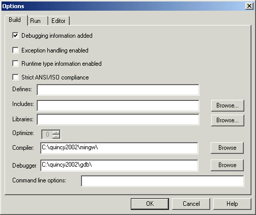
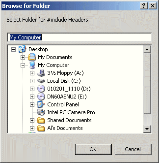
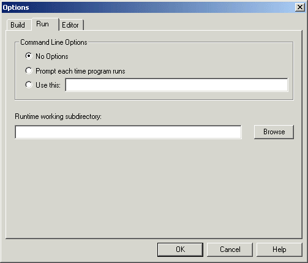
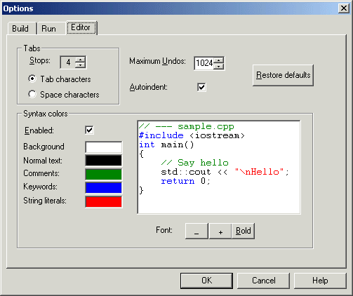
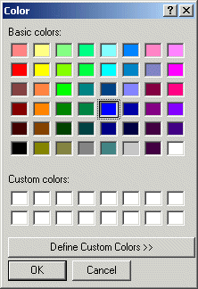

Setting Options
There are several options for how the program is to be compiled and how Quincy is to run it from within the IDE. You set these options prior to compiling and running the program. Quincy remembers the option settings from session to session.
If you are working with a Quincy Project as described in
Working with Projects, the options settings are stored in the Project file when you save it. If you change project-related options, Quincy will prompt you to save the Project file when you close it. The next time you load the project, the settings are restored to what you set them to here.
If you are using Quincy with the tutorial examples as described in
Example Programs, the tutorial command files set the options that each example uses. You can override these options durint the session, but the tutorial command files are not affected when you do. The next time you open the tutorial, its programmed options are restored.
To set Quincy's options choose the Options menu command. Quincy opens the Options dialog, a tabbed dialog with tabs for
Build options,
Run options, and
Editor options.
Build Options
These are the options that control how Quincy builds a program, including how the compiler processes the source code, what kind of code is generated, and where the compiler looks for header files and libraries.

- Select the Build Tab in the Options dialog as shown above.
- Check the Debugging Information Added checkbox if you want to use the IDE to step through the program or set breakpoints in the source code display when you debug the program.
- Check the Exception Handling Enabled checkbox if your program uses C++ exception handling (try/throw/catch).
- Check the Runtime Type Information Enabled checkbox if your program uses the dynamic_cast or typeid operators. Any source code file that uses these operators should include the Standard C++ <typeinfo> header file.
- Check the String ANSI/ISO Compliance checkbox if you want the compiler to test your code for compliance to Standard C and C++.
- Enter any preprocessor macros that the program needs in the Define field. Whatever you type here will be treated as if you put it at the front of the source code as the arguments to a #define preprocessor directive with this exception: to define a global symbol with a value, use an equals sign (=) as shown here:
VERSION=2.5
The example just shown compiles as if the source code file included this statement:
#define VERSION 2.5
If you need more than one macro, separate them in the Define field with semicolons as shown here:
NDEBUG;VERSION=2.5
- Enter paths to folders where the preprocessor can search for header files specified with the #include <file.h> directive. Separate the paths with semicolons. You can use relative paths or fully qualified paths. The preprocessor searches the paths in the order you enter them here. If the header file is not in one of these paths, then the preprocessor searches the compiler's INCLUDE subdirectories.
- Enter paths to folders where the linker can search for library files that a Project file includes. (See "Quincy Projects") Separate the paths with semicolons. You can use relative paths or fully qualified paths. The linker searches the paths in the order you enter them here. If a library file is not in one of these paths, then the linker searches the compiler's LIB subdirectories.
- Select the level of optimization the compiler should use. This option is a value from 0 to 3. If you selected Debugging information, this value defaults to zero.
- Enter the path where the gcc compiler is installed. If you leave this field blank, Quincy looks for the compiler in the /mingw subdirectory under the directory where Quincy is installed.
- Enter the path where the gdb debugger is installed. If you leave this field blank, Quincy looks for the debugger in the /gdb subdirectory under the directory where Quincy is installed. If no debugger is there, Quincy looks for one in the /bin subdirectory under the directory where the compiler is installed.
- Enter any additional command line arguments that Quincy should pass to the gcc compiler program. For example, adding -v causes Quincy to display the compiler's verbose information in the Build dialog.
For the Includes, Libraries, and Compiler fields you can click Browse button to open the Browse for Folder dialog shown here.

Browse to the folder you want to add to the list in the Option dialog's Build tab, and click OK.
Run Options
- Select the Run tab on the Options dialog as shown here.

- For console applications, set the Command Line options according to how you wish to run the program from within Quincy.
- Choose No Options if the program does not process command line parameters
- Click Prompt Each Time... if you want Quincy to prompt for command line parameters every time you run the program
- Click Use This and enter the command line options in the accompanying text box control to always pass the same command line parameters to the program when Quincy runs it.
- Enter the path to the runtime working subdirectory. Quincy will set that subdirectory as the default one before running the program. The program will read and write data files with ambiguous path specifications relative to this path.
- Leave the path blank to have the program use the subdirectory of its source code files as the runtime working directory.
Editor Options
- Select the Editor tab on the Options dialog as shown here.

As you change the editor's settings, the simulated source code display in the Editor tabbed dialog reflects your changes.
- Select the number of character positions for each tab stop by changing the scroll button control.
- Select the maximum number of edit action undos that Quincy stores.
- Enable or disable the autoindent feature by clicking the Autoindent check box control. With autoindent disabled, Quincy always returns the insertion cursor to the left margin when you press Enter.
- Select whether the editor inserts space characters or tab characters into the text when you press the Tab key or use the autoindent feature.
- Enable or disable syntax color highlighting.
- With syntax color highlighting:
- click one of the color bars next to the text feature you want to highlight with color. This action opens the Color dialog shown here.

- Click the color you want to use for the text feature selected.
- Click OK.
- To revert to Quincy's default color scheme, click Restore Defaults.
- Change the font size by clicking the + button to increase the font size and the - button to decrease the font size.
- Click the Bold button to toggle the font between normal width and boldface.
Recording Your Option Settings
- When you have made all the options changes you want to make, click OK on the Options dialog.
- Or, to nullify any changes you might have made, Click Cancel on the Options dialog.
<--previous page
next page-->